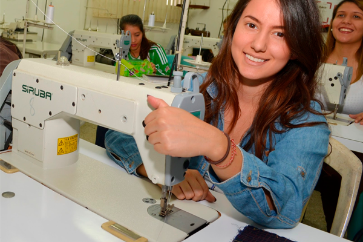

| Confección Textil | |
1. OPERATIVIDAD DE MÁQUINAS DE CONFECCIÓN TEXTIL: |
 |
| Elaboración de mandiles y cartucheras, utilizando eficientemente la máquina recta. | |
| 2. CONFECCIÓN DE PRENDAS DEPORTIVAS: | |
Elaboración de prendas deportivas para niños, jóvenes y adultos. |
|
| 3. CONFECCIÓN DE PRENDAS PARA NIÑAS: | |
| Elaboración de prendas de vestir para niñas (jumper, vestidos, etc.) | |
| 4. CONFECCIÓN DE PRENDA DE DAMAS: | |
| Elaboración de prendas de vestir para damas (polos de vestir, vestidos, prendas íntimas, etc.) | |